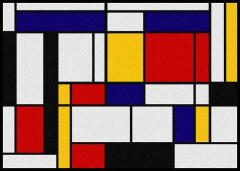

Bienvenue ! Je suis Laurent Abemango. Je suis un Passioné d'Arts Graphiques, mais pas seulement...
...J'y reviendrais dans la partie "J'aime".
Je suis actuellement en formation dans une école numérique de Paris XX: _Blank.Comme exercice nos formateurs nous ont demandé de créer un site qui nous servirait de C.V.
Donc pour la réalisation de ce site me présentant, je me suis inspiré de l'Artiste Peintre ABSTRAIT néerlandais, Piet Mondrian et notamment de ses Compositions entre 1930 et 1942.


Vous trouverez sur ce site un peu de mon Histoire et beaucoup de mes projets en cours ou aboutis.